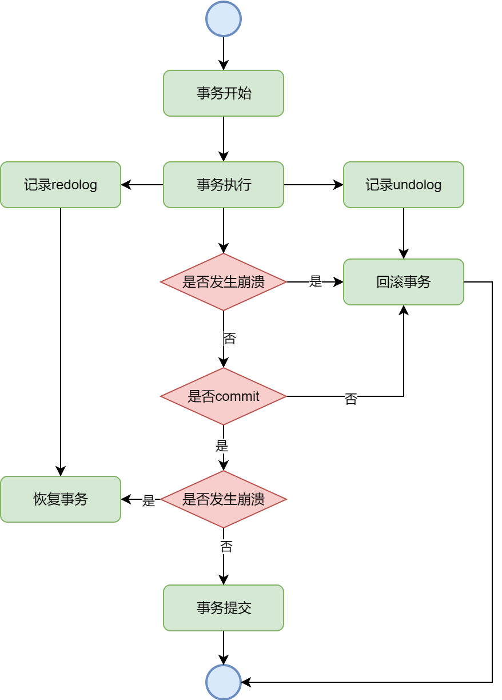
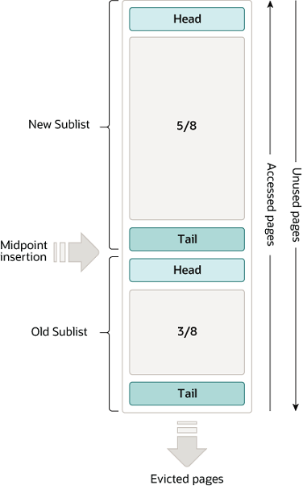

MySQL知识整理
MySQL
MySQL数据类型
MySQL数据结构
MySQL索引
MySQL索引类型
（1）按数据结构分类
| 索引名称 | 介绍 |
|---|---|
| B+树索引 | 通过B+树形结构存储索引数据，适用范围查询和精确查询，支持有序数据的快查找、排序和聚合操作。常用于InnoDB和MyISAM引擎 |
| 哈希索引 | 基于哈希表的结构，适用于等值查询，但不支持范围查询，常用于Memory引擎 |
| 倒排索引（全文索引 Full-Text） | 用于全文索引，将全文分词，通过存储与文档的映射，支持模糊匹配和关键字搜索。适用于大文本字段，用于查找包含特定词语的记录 |
| R-树索引 | 专为多维空间数据设计，如地理坐标，适用于空间茶席吗，常用于存储和查询地理信息系统中的空间数据 |
（2）按索引是否包含记录数据分类
| 索引名称 | 介绍 |
|---|---|
| 聚簇索引 | InnoDB中主键索引就是聚簇索引。基于主键排序存储，叶子节点存储完整数据行的数据 |
| 非聚簇索引 | 非主键索引的索引，该索引的叶子节点仅存储索引字段和主键的值，如果需要查询完整数据行，则需要回表 |
（3）按功能分类
| 索引名称 | 介绍 |
|---|---|
| 普通索引（二级索引） | 一般非主键索引且非唯一索引 |
| 主键索引 | 顾名思义，唯一主键的索引，每个表只有一个主键索引，且主键值不为NULL |
| 唯一索引 | 保证索引列中值唯一，允许NULL，但一列中可以有多个NULL |
| 复合索引（联合索引） | 由多个列组成的索引，适用于多列的查询条件，其中的列是按照指定顺序排列的 |
| 全文索引 | 用于全文搜索，支持对长文本字段进行关键字查找，支持模糊匹配等 |
| 空间索引 | 用于空间数据查询，通常使用R-Tree结构，适合多维数据查询，主要用于存储引擎中的地理信息数据 |
MySQL日志
MySQL日志类型有哪些
主要三种：binlog、redolog以及undolog
-
binlog：二进制日志，用于记录MySQL中的所有更新和修改操作，记录DDL和DML操作，包括对表结构的更改、数据的增删查等等。binlog在事务提交后生成，因此可以用于恢复数据库，也用来进行主从复制
-
redolog：当数据发生修改时，redolog会将这些操作记录下来并写入磁盘。可用于恢复数据保证事务一致性和持久性。当MySQL宕机时，可以重放redolog来恢复数据
-
undolog：用于回滚操作。MySQL发生数据新增或修改时，undolog会记录这些修改并写入磁盘，可用于回滚事务和MVCC，实现事务的原子性和隔离性
binlog和redolog都是二进制日志。binlog记录MySQL所有操作，redolog用于保证数据一致性和持久性。binlog是逻辑日志，记录SQL语句，redolog是物理日志，记录数据页的修改。所以binlog可跨平台，redolog不能
其他类型日志：错误日志存储服务器启动，关闭，运行中的错误和告警信息；查询日志记录所有客户端请求；慢查询日志记录时间超过阈值的sql语句；事务日志记录事务执行相关信息；中继日志，从库存储主库的二进制日志，用于主从复制
binlog作用
记录所有更改数据的SQL语句的二级制日志文件，主要用于故障恢复和主从复制
binlog记录时间戳，可以回复到指定时间点
主库可以传输自己的binlog给从库，从库重放binlog更新自身数据
记录方式（三种）
（1）STATEMENT：记录sql，但动态函数（now()、uuid）可能会导致主从不一致
（2）ROW：记录行数据变化，可避免动态函数，但日志量大
（3）MIXED：风险情况使用ROW，正常使用STATENMENT
可以通过sync_binlog参数控制刷盘频率
sync_binlog = 0：事务提交时只写入缓存，由操作系统决定刷盘
sync_binlog = 1：每次事务提交都会立即刷盘，保证数据可靠
sync_binlog = N：每提交N个事务后刷盘，性能和可靠性折中
undolog作用
记录修改前的数据，用于回滚操作，保证事务的原子性，用于支持MVCC
每次修改数据前，记录旧值到undolog，从而形成版本链（trx_id和roll_pointer），从而配置read view实现MVCC快照读
对于事务中的操作：
- 插入操作：undolog记录主键值，回滚时基于主键删除
- 删除操作：undolog记录待删除的内容，回滚时插入
- 更新操作：undolog记录更新的列的旧值，回滚时更新为旧值
详细见事务的MVCC
redolog作用
用于保证事务的持久性，及时宕机也能恢复提交的数据；且利用WAL技术，将随机写转化为顺序写（随机写数据页变为顺序写日志，异步随机写数据页）
WAL（Write-Ahead Logging）用于确保在修改真正的数据之前，先将修改记录写入日志，使即使系统崩溃，也能通过日志来恢复数据。保证了持久性和一致性。流程如下：
- 当一个事务开始时，所有对数据库的修改都会先记录到一个日志文件中，而不是直接应用到数据库文件，可用于恢复数据
- 当日志记录写入磁盘后，才会应用这些修改到数据库文件中
redolog机制如下：
-
更新操作先写内存（Buffer Pool），再记录Redo log，标记为脏页
-
后台线程在合适时机将脏页刷入磁盘
-
发生宕机时通过redolog恢复未刷盘的修改
redolog的刷盘时机通过innodb_flush_log_at_trx_commit参数控制
innodb_flush_log_at_trx_commit = 0：使用log buffer（实质上是redolog的内存形式），保存在内存，每秒刷盘一次，可能丢失最近1秒的数据
innodb_flush_log_at_trx_commit = 1：事务提交时立即刷盘，保证数据可靠性
innodb_flush_log_at_trx_commit = 2：事务提交时写入文件系统缓存，每秒刷盘一次，可能丢失操作系统崩溃前的数据
1最安全，0性能最高

注意，此处是刷盘redolog，而不是动数据
log buffer是什么
log buffer用于在内存中暂存redolog，用于提高redolog的性能。即写redolog还要先写log buffer，等到一定时机（事务提交或者log buffer超过总量的一半）再写redolog，从而可以批量写入多条redolog
log buffer在innodb_flush_log_at_trx_commit参数的作用下表现如下
innodb_flush_log_at_trx_commit = 0：事务提交时写入log buffer，1秒后将log buffer写到操作系统的cache，并调用fsync落盘而非redolog，可能丢失最近1秒的数据
innodb_flush_log_at_trx_commit = 1：事务提交时将log buffer写到操作系统的cache，立即调用fsync落盘redolog（默认配置）
innodb_flush_log_at_trx_commit = 2：事务提交时将log buffer写到操作系统的cache，但不立即调用fsync，而是每秒执行一次fsync，落盘到redolog数据库宕机无事，但服务器宕机会丢失1s的数据
MySQL事务
讲讲ACID
MCVCC是什么
MySQL分布式
主从同步如何实现
MySQL调优
MySQL架构
MySQL获取数据是否只从磁盘读取
MySQL在获取数据时，并非一定从磁盘获取，有缓存机制。如对于InnoDB存储引擎，会将常用的数据和索引缓存在内存中，提高读取性能。查询时先检查缓存，再检查磁盘
MySQL读取缓存中的缓存，包括查询缓存和InnoDB缓冲池（Buffer Pool）
- 查询缓存（MySQL 8.0废弃），对于相同的sql，如果表没有发生变化，则可以直接从查询缓存中获取，无需重复执行查询，具体实现类似于一个map，key是SQL，value为结果，但因为条件苛刻，所以废弃
- InnoDB缓冲池（Buffer Pool），核心缓存组件，缓冲池中缓存了数据页、索引页和其他相关信息，查询时先从buffer pool中查询，有则直接返回数据，否则从磁盘读取并缓存到buffer pool中
InnoDB存储引擎将表数据和索引以页为单位存储时，通常16KB，读取某条记录时，会加载该记录所在的页到缓存中
MySQL从磁盘读取数据和放到缓存里时，单位都是页，符合空间局部性，使得顺序遍历速度加快
MySQL在修改时，也会在内存中的Buffer pool进行修改，然后一定时机将这些数据写磁盘。通过redolog避免服务器宕机修改丢失。
Buffer Pool的淘汰机制

Buffer Pool中分了老年代和新生代，老年代默认3/8，可以通过参数调整。
当有新页面加入Buffer Pool中时，插入位置为老年代头部，如果新页在1s内再次被访问，也不会立即移到新生代，而是1s后，如果该页再次被访问，才会移入新生代
- 为什么先插入老年代头部：原因为InnoDB有预读机制，如果读取连续的多个页面后，InnoDB会认为后续数据也会被读取，所以会进行异步加载到Buffer Pool，但可能实际并不需要在这些数据，如果此时插入新生代头部了，反而会导致热点数据污染，但如果先加入的老年代，就没问题。
- 为什么1s：1s这个时间窗口用来确定这个数据确实是热点数据，因为可能大量数据访问的时候，可能就这个1s内会多次访问，之后就不访问了，1s后还有，可能就是别的业务来访问了，此时可以更好的确定这个数据是热点数据。
MySQL中Change Buffer是什么
Change Buffer是My SQL InnoDB中的一个机制，用于暂存对二级索引的插入和更新操作，并不立即执行。InnoDB会在条件合适时（如页读取或Flush操作），将这些操作写入二级索引
好处为批量处理，避免频繁写入，也减少了随机写入的开销
具体而言，就是当有针对二级索引的操作时，如果Buffer Pool中没有该二级索引的数据页，MySQL不会立即把这个数据的索引页加载到Buffer Pool（内存）中，而是使用change buffer缓存该操作（change buffer也再buffer pool中），当第二次访问到该数据时，MySQL会加载该数据所在索引页并应用change buffer的更改，保证数据一致性
注意，只对二级索引生效
同样的，对于宕机，change buffer也会被落盘到系统表空间，redo log会进行记录
change buffer大小可修改，默认25%的InnoDB大小，最大50%
MySQL杂项
MySQL中一条查询的执行过程
MySQL中数据排序如何实现
MySQL中数据排序为order by，排序过程中，如果排序字段命中索引，则使用索引排序，否则使用文件排序，文件排序中，如果数据量少，则在内存中排序，一般使用单路排序或双路排序。数据量大，则使用磁盘进行外部排序，排序使用归并排序
- 如果查询中的
order by子句包含的字段都已经在索引中，且索引的排序顺序和order by子句一致，则可直接使用索引进行排序 - 文件排序时，排序数据少，则在内存中使用
sort_buffer排序，如果数据量大，则利用磁盘临时文件进行排序
关于单路排序和双路排序，与select字段的长度有关。
如果select字段的长度小于max_length_for_sort_data参数，则使用单路排序，将整个select列放到sort_buffer中。
否则，使用双路排序，只放row_id（有主键就是主键）和order by的字段，排序后通过row_id进行回表，性能较差